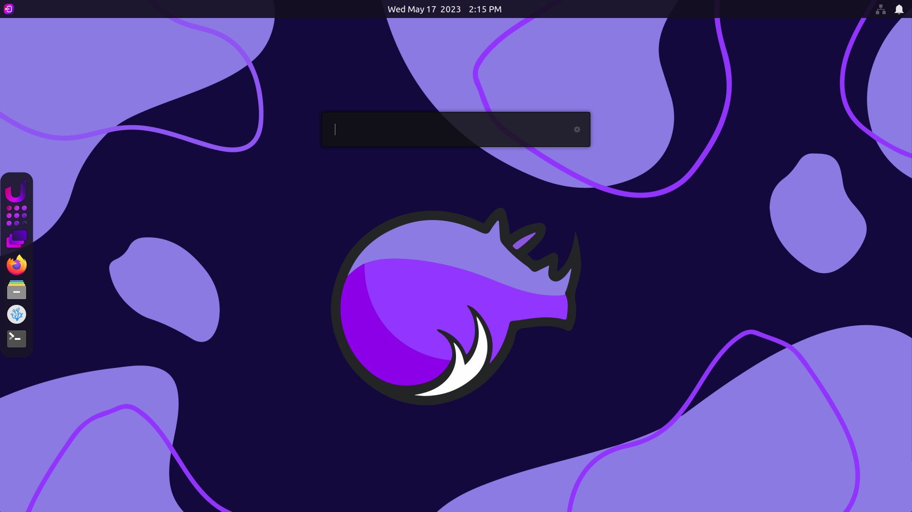
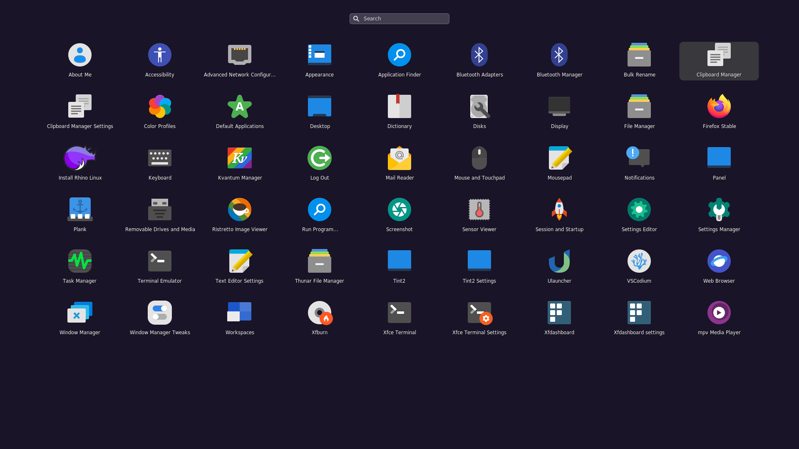

XFCE becomes modern.
The Unicorn Desktop combines the best of the traditional and modern takes on the desktop experience. Ready to serve both powerusers and beginners alike, the Unicorn Desktop is a force to be reckoned with. Based on XFCE, this desktop experience is lightweight and fast, but 100% powerful.
Built with user experience in mind, we have hand selected the best components to provide a lightweight system that works in perfect harmony. Plank dock and the XFCE panel have been chosen. With sensible defaults and a new take on the desktop, you will be able to work efficiently with ease.
uLauncher at the heart of your desktop.

The Unicorn Desktop uses a modified version of uLauncher. uLauncher comes with many advanced features such as "Fuzzy search" as well as keyboard shortcuts.
The main feature for uLauncher, aside from launching applications, is that it is a lightning-fast directory browser. Just type "/" or "~" to begin searching through your directories.
A beautiful new App Grid.
Our application grid, lightpad, is a simple and powerful application launcher that is Wayland compatible. We have made modifications to the theming of lightpad to integrate perfectly into Unicorn and Rhino Linux.
A whole new dashboard.

You can switch between virtual desktops with ease. We have loaded in xfdashboard, with many minor tweaks and improvements. Xfdashboard brings a gnome-shell like virtual desktop and èxpose built right into XFCE.